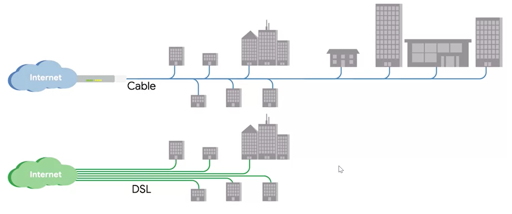

cable tech is shared bandwidth with different freq than the TV that also uses it

when heavy shared used, it can be slowed down
Cable Internet connections are usually managed by what's known as a cable modem. This is a device that sits at the edge of a consumer's network and connects it to the cable modem termination system, or CMTS.